Delfines Comunes
1 Censos
Muchos censos en embarcaciones de oportunidad.
Número de censos por año y estación
| Ano | Spring | Fall | Winter | Summer | TOTAL |
|---|---|---|---|---|---|
| 2006 | 2 | 1 | 2 | 0 | 5 |
| 2007 | 3 | 2 | 5 | 1 | 11 |
| 2008 | 1 | 3 | 3 | 2 | 9 |
| 2009 | 1 | 0 | 3 | 2 | 6 |
| 2010 | 0 | 1 | 2 | 1 | 4 |
| 2013 | 0 | 0 | 0 | 1 | 1 |
| 2014 | 2 | 1 | 2 | 0 | 5 |
| 2015 | 4 | 2 | 6 | 0 | 12 |
| 2016 | 3 | 4 | 5 | 5 | 17 |
| 2017 | 3 | 3 | 2 | 3 | 11 |
| 2018 | 0 | 0 | 0 | 1 | 1 |
Presencia a o largo de todo el año
| season | n.delfines |
|---|---|
| Spring | 2648 |
| Summer | 1880 |
| Fall | 2841 |
| Winter | 1346 |
Grupos de decenas de individuos, con algunos grupos muy grandes

| season | min_group | max_group | mean_group | CV_group |
|---|---|---|---|---|
| Spring | 1 | 250 | 10.0 | 2.5 |
| Summer | 1 | 175 | 8.6 | 1.9 |
| Fall | 1 | 450 | 19.5 | 2.8 |
| Winter | 1 | 200 | 15.3 | 2.4 |
2 Exploratory Data Analysis
2.1 Efecto de barco
2.1.1 Distancia
Parece haber efecto del barco sobre la distancia a la que se detectan delfines comunes. Considerar incluir en la funcion de deteccion


Tamaño muestral, discrimando por embarcación
| Ano | 1 | 2 |
|---|---|---|
| 2007 | 23 | 1 |
| 2008 | 15 | 4 |
| 2009 | 0 | 10 |
| 2010 | 0 | 16 |
| 2013 | 9 | 0 |
| 2014 | 35 | 7 |
| 2015 | 118 | 40 |
| 2016 | 90 | 105 |
| 2017 | 69 | 120 |
| 2018 | 0 | 56 |
2.1.2 Tamaño grupal
Barco no parece tener efecto sobre el tamaño grupal detectado


2.2 Estado del mar
2.2.1 Barco
No hay diferencias en el estado del mar en el que se hicieron censos, dependiendo del barco

2.2.2 Distancia
No hay diferencia entre barcos en la distancia a la que se hicieron observaciones, como funcion del estado del mar
Descartar observaciones con Beaufort = 5
Considerar si descartar Beaufort = 4

2.3 Numero de observadores efectivos
Numeros definidos por Silvana y Guille

| year | 1 | 2 | 3 | NA | 4 |
|---|---|---|---|---|---|
| 2006 | 1 | 2 | 1 | 1 | NA |
| 2007 | 4 | 6 | 1 | NA | NA |
| 2008 | 3 | 5 | 1 | NA | NA |
| 2009 | 1 | 4 | 1 | NA | NA |
| 2010 | NA | 2 | 2 | NA | NA |
| 2013 | 1 | NA | NA | NA | NA |
| 2014 | NA | 2 | 2 | NA | 1 |
| 2015 | NA | 9 | 3 | NA | NA |
| 2016 | NA | 15 | 2 | NA | NA |
| 2017 | NA | 10 | 1 | NA | NA |
| 2018 | NA | 1 | NA | NA | NA |
2.4 Variables espaciales
2.4.1 Escala: periodo
2.4.1.1 Profundidad
Parece haber mayor cantidad de detecciones en la zona donde aumenta la profundidad - alrededor de northing 5.47 Mm

2.4.1.2 Pendiente
La zona donde hay mas detecciones parece ser donde hay una pendiente mas pronunciada

2.4.1.3 Conclusion escala periodo
Evaluar la incorporacion de pendiente y profundidad en la funcion de deteccion - creo que codifican la misma informacion
2.4.2 Escala mensual
Ninguna de las variables ambientales medidas a escala estacional parece tener relacion con la deteccion de animales
2.4.2.1 Gradiente de temperatura superficial
No parece infuenciar la deteccion de animales

2.4.2.2 Temperatura superficial del mar

2.4.2.3 Clorofila
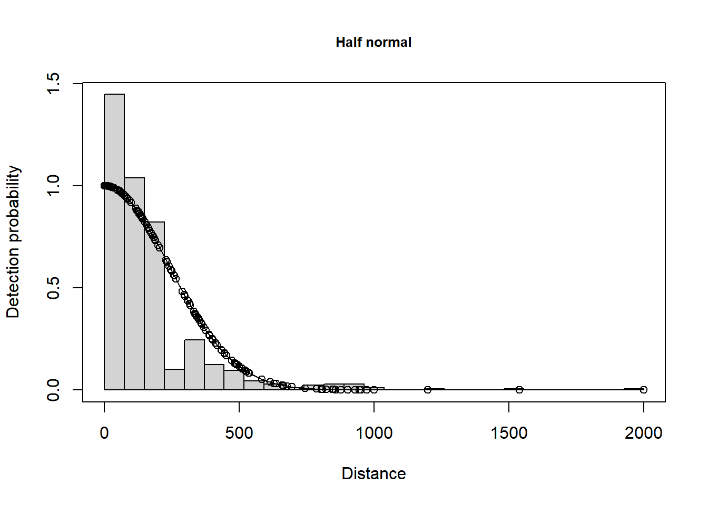
2.4.2.4 Distancia a upwellings

2.4.2.5 Velocidad vertical (downwellings y upwellings)

3 Funciones de deteccion
3.1 Datos
3.2 Funciones de detección básicas
Ajustamos modelos half-normal y hazard rate


3.3 Truncar datos
Los datos tomados a una gran distancia a contribuyen poca información a la estimación de la forma de la función de detección a distancias cortas y puede resultar en un ajuste pobre y con varianza alta. Por ende, es práctica común truncar los datos.
Aquí se grafica el tamaño grupal como función de la distancia a la que fueron registrados. Se detectaron grupos hasta 2000m de distancia de la trayectoria de la embarcación.

Consejo práctico recibido en curso de Distance Sampling: “consider reducing the truncation distance, w, if more than 5% of the Pa(zi) are <0.2, or if any are less than 0.1”. Probabilidades (Pa) pequeñas tienen mucha influencia en la estimación de abundancia, porque entran en el denominador del estimador Horvitz-Thompson.
Estas son las proporciones de observaciones con diferentes Pa (estimadas usando una función half-normal. 17% de las observaciones son menores a 0.2, y hay 81 observaciones con Pa < 0.1 (no mostrado en la tabla). Por ende, truncar los datos
| bin | n | prop |
|---|---|---|
| (0,0.2] | 121 | 0.17 |
| (0.2,0.4] | 97 | 0.14 |
| (0.4,0.6] | 61 | 0.09 |
| (0.6,0.8] | 15 | 0.02 |
| (0.8,1] | 423 | 0.59 |
Buckland et al. (2001) (p. 16) sugiere truncar donde la probabilidad de detección es ~0.15. Aquí se grafica la función de detección (half-normal). Esta distancia es ~325m. Al truncar a esa distancia, se eliminan 49 datos (~ 11.9% de los datos).

Ajustamos los modelos half-normal y hazard rate con los datos truncados. El modelo hazard rate es mas parsimonioso.
| df | AIC | deltaAIC | |
|---|---|---|---|
| dd.df.hr.trun | 2 | 7060.6 | 0.00 |
| dd.df.hn.trun | 1 | 7063.8 | 3.22 |
3.4 Datos agrupados
Idealmente, las distancias transversales desde el trackline deben ser tomadas exactas. Sin embargo, es común que los observadores redondeen las distancias al tomarlas.
Este es un gráfico de las distancias a las que fueron tomadas las observaciones, con la función de detección hazard rate (observaciones truncadas a 325). Se ve que las distancias fueron redondeadas en 0, 50, 100, 150, 200, 250, 300.
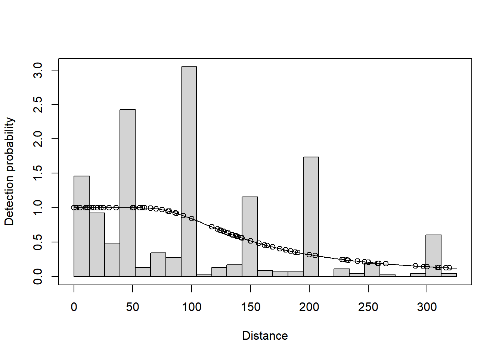
Buckland et al. (2015) (p. 68)
“The Montrave Case Study: Line Transect Sampling” :
[…] We see from Fig. 5.4 that there is rounding in the data. Seven distances were each recorded four times or more, and all are divisible by 5: 5, 15, 20, 25, 35, 45, 50 m […]
[…] To assess model fit, as distinct from revealing rounding in the data, we would like to select cutpoints both for our histogram and for the χ2 goodness-of-fit test to avoid these favoured distances. Here, we use the following cutpoints: 0, 12.5, 22.5, 32.5, 42.5, 52.5, 62.5, 77.5, 95 m. Note the use of wider intervals at larger distances, where smaller numbers of birds are detected […]
Aquí utilizamos una estrategia similar; elegimos puntos de corte 0, 25, 75, 125, 175, 225, 275, 325. El último bin termina en 300, porque la distancia de truncado es 325m.
Ajustamos los modelos half-normal y hazard rate con los datos truncados y aplicando los cutpoints para lidiar con la agrupación de datos. El modelo hazard rate es mas parsimonioso. Utilizar el modelo hazard rate.
| df | AIC | deltaAIC | |
|---|---|---|---|
| dd.df.hr.trun.cp | 2 | 2273.3 | 0.00 |
| dd.df.hn.trun.cp | 1 | 2275.8 | 2.49 |
3.5 Términos de ajuste
Distance allows the selection of three types of series (one type per model)
| Key function | Series adjustment |
|---|---|
| Uniform | Cosine |
| Half normal | Hermite polynomial |
| Hazard rate | Simple polynomial |
Aplicamos los terminos de ajuste a los modelos half-normal y hazard rate
El modelo más parsimonioso es el modelo hazard rate sin término de ajuste.
| df | AIC | deltaAIC | |
|---|---|---|---|
| dd.df.hr.trun.cp | 2 | 2273.3 | 0.00 |
| dd.df.hr.trun.cp.poly | 2 | 2273.3 | 0.00 |
| dd.df.hn.trun.cp | 1 | 2275.8 | 2.49 |
| dd.df.hn.trun.cp.herm | 1 | 2275.8 | 2.49 |

3.6 Covariables
Analizamos incluir
- embarcación
- tamaño grupal
- estado del mar (Beaufort)
- numero efectivo de observadores
en las funciones de detección
La función de detección mas parsimoniosa incluye el numero de observadores efectivos, y la segunda incluye el estado del mar y el tamaño grupal
| df | AIC | deltaAIC | |
|---|---|---|---|
| dd.df.hr.trun.cp.nobs | 5 | 2242.3 | 0.00 |
| dd.df.hr.trun.cp.sizebeauf | 7 | 2245.6 | 3.30 |
| dd.df.hr.trun.cp.beauf | 6 | 2254.7 | 12.40 |
| dd.df.hr.trun.cp.shipbeauf | 7 | 2256.4 | 14.10 |
| dd.df.hr.trun.cp.size | 3 | 2260.8 | 18.48 |
| dd.df.hr.trun.cp.sizeship | 4 | 2261.0 | 18.77 |
| dd.df.hr.trun.cp | 2 | 2273.3 | 31.05 |
| dd.df.hr.trun.cp.ship | 3 | 2273.5 | 31.23 |
3.6.1 Efecto del estado del mar
Este es un gráfico de la función de detección considerando el efecto del estado del mar - la línea negra es la función de detección promedio.
Nótese que los patrones no siguen el patrón esperado; uno esperaría que con Beaufort 0 la detección a distancia fuese mayor, y que con Beaufort 4 la detección fuese menor. Sin embargo, no es así

Probablemente sea un problema de tamaño muestral discriminado por estado del mar. Hay pocos registros en Beaufort 0, la mayoría de los registros fueron tomados en Beaufort 1, 2, y 3.
| beaufort_fct | n |
|---|---|
| 0 | 62 |
| 1 | 155 |
| 2 | 238 |
| 3 | 141 |
| 4 | 36 |
La forma de lidiar con esto es agrupar beaufort 0 y 1 en un grupo y 3 y 4 en un segundo grupo.
Ajustamos los modelos nuevamente.
3.6.2 Efecto del estado del mar, agrupado
Este es el mismo gráfico, mostrando Beaufort agrupado.
Los patrones son los esperados, y hay diferencias marcadas entre los valores de Beaufort. Conclusión: utilizar estado del mar como covariable.

Conclusión: utilizar Beaufort agrupado como covariable en la funcion de deteccion.
Esto significa que hay que producir nuevamente el objeto segdata
3.6.3 Efecto de tamaño grupal
Este es un gráfico de la función de detección considerando el efecto del estado del mar - la línea negra es la función de detección promedio.
Las líneas de colores representan la probabilidad de detección de grupos que representan diferentes cuantiles de tamaños grupales observados.
La forma de la funcion de deteccion cambia para los cuantiles mas altos, mayores a 96%.

Que el tamaño grupal sea una covariable de la funcion de deteccion termina haciendo el ajuste de density surface models problematico.
Al consultar con Len Thomas, me dijo que hay 2 maneras de solucionar este problema:
- complex bayesian model - he is doing for a paper that they will publish. This woud be the “right way” of doing it
- treat DD as effectively 2 clusters: 1 for small group sizes, a second one for larger gorup sizes. Find the spot where group size will not impact the detection function very much. Fit DSMs to each of the clusters, and then sum them. This is the “good enough” way
Creo que no estamos en situación de tener que implementar la primera solución (Len me dijo que él no lo haría).
Dado el grafico de la funcion de deteccion , creo que tenemos 2 opciones que me gustaria discutir:
ignorar el efecto de tamaño grupal, y entender que las estimaciones de abundancia probablemente esten sesgadas hacia abajo
intentar el ejercicio de tratar a DD como 2 clusters - quizas tengamos que hacer esto para quedarnos tranquilos nosotros, pero no estoy seguro que valga la pena
Quizas este grafico ayude para tomar una decision. Se ve que los tamaños grupales grandes fueron detectados en todas las estaciones, por lo que si adoptamos la estrategia de ignorar el efecto de tamaño grupal no estariamos sesgando las estimaciones estacionales

3.6.4 Efecto de embarcación
Existen diferencias entre las curvas de las dos embarcaciones, pero no lo suficientemente marcadas para ser incluidas en la función de detección.
Conclusión: no utilizar embarcación como covariable.

3.6.5 Efecto de numero de observadores efectivos
Este es un gráfico de la función de detección considerando el efecto del numero efectivo de observadores - la línea negra es la función de detección promedio.
Nótese que los patrones no siguen el patrón esperado; las peores funciones de deteccion fueron con 1 ó 4 observadores
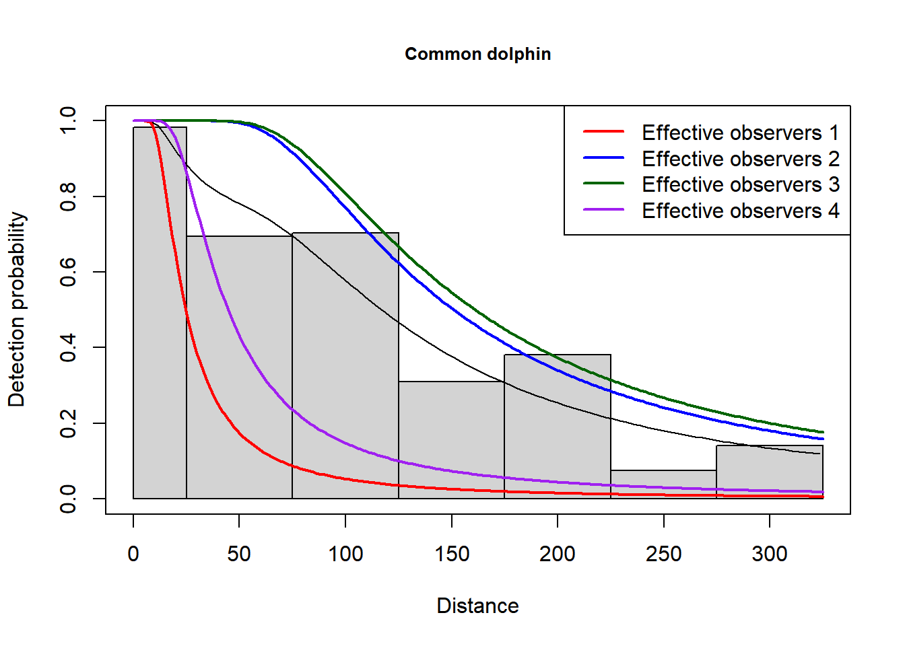
3.6.6 Efecto de numero de observadores efectivos , agrupado
3.6.6.1 Agrupar 3 y 4 observadores
Las lineas azul y verde son contra intuitivas
Hay una separacion entre surveys con 1 observador y el resto
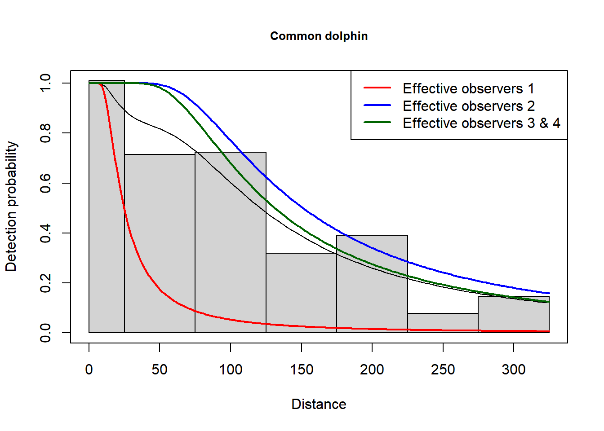
3.6.6.2 Agrupar 1 y >1 observadores
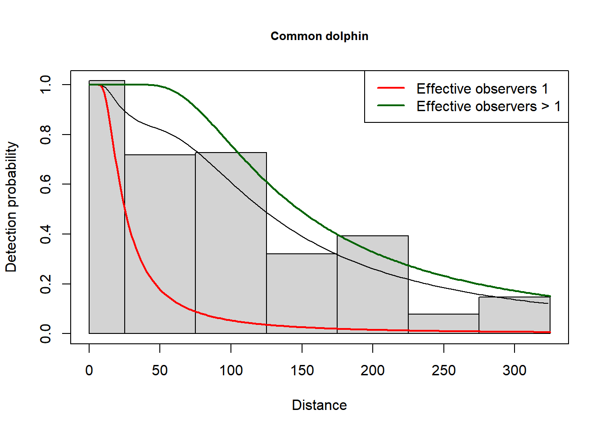
Notese los tamaños muestrales (detecciones dentro de la distancia de truncado trunc.dist_dd) en cada categoria para ajustar esta funcion de deteccion. El tamaño muestral para n_obs== 1 es mucho menor que la categoria > 1.
| nobs_grp | n |
|---|---|
| > 1 | 597 |
| 1 | 35 |
3.7 Model selection
El modelo mas parsimonioso incluye estado de mar y tamaño grupal. El segundo incluye numero efectivo de observadores. No incorporare numero efectivo de observadores. Razones desarroladas en Section 7
| df | AIC | ll | deltaAIC | |
|---|---|---|---|---|
| dd.df.hr.trun.cp.sizebeaufgrp | 5 | 2245.7 | -1117.858 | 0.00 |
| dd.df.hr.trun.cp.nobsgrp | 3 | 2248.9 | -1121.435 | 3.15 |
| dd.df.hr.trun.cp.beaufgrp | 4 | 2253.4 | -1122.694 | 7.67 |
| dd.df.hr.trun.cp.shipbeaufgrp | 5 | 2255.3 | -1122.632 | 9.55 |
| dd.df.hr.trun.cp.size | 3 | 2260.8 | -1127.377 | 15.04 |
| dd.df.hr.trun.cp.sizeship | 4 | 2261.0 | -1126.520 | 15.32 |
| dd.df.hr.trun.cp | 2 | 2273.3 | -1134.661 | 27.61 |
| dd.df.hr.trun.cp.ship | 3 | 2273.5 | -1133.755 | 27.79 |
3.8 Conclusión de función de detección
Truncar en trunc.dist_dd: 325m - esto descarta 85 datos (~ 11.9% de los datos)
cutpoints: cutpoints_dd: 0, 25, 75, 125, 175, 225, 275, 325
Hazard rate
No adjustment term
Covariables
Beaufort state??
tamaño grupal??
3.8.1 QQ plots
3.8.1.1 Beaufort (agrupado) + Tamaño grupal
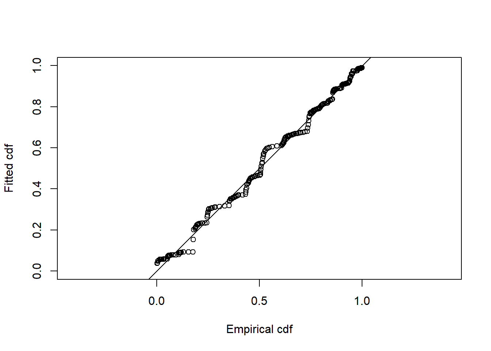
3.8.1.2 Beaufort (agrupado)
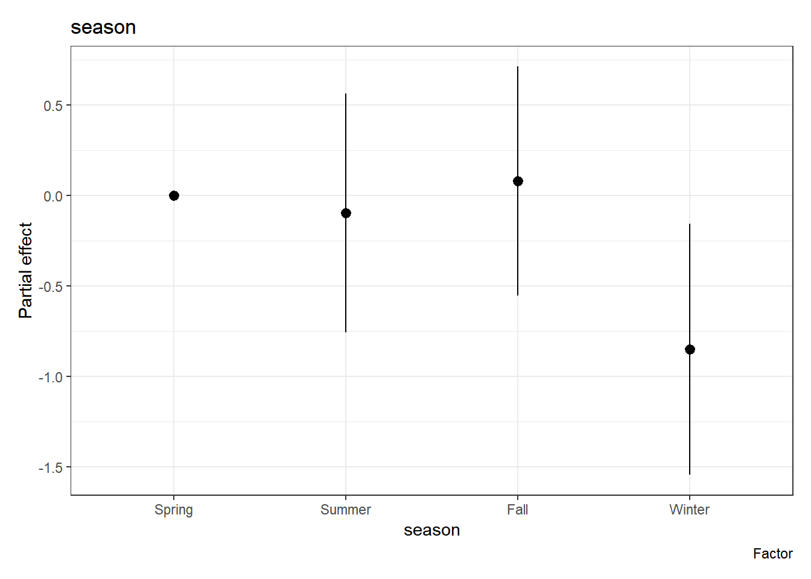
3.8.1.3 Observadores efectivos (agrupado)
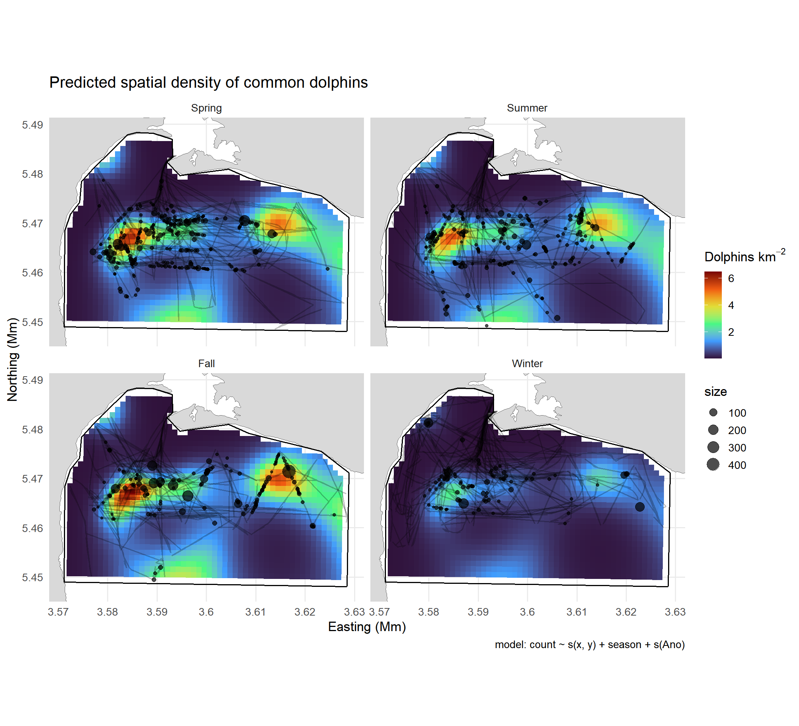
3.8.2 Estimaciones de distance clasico
Discutiendo con Silvana, decidimos que necesitamos responder 2 preguntas para saber como continuar:
- Vale la pena incluir Beaufort en la funcion de deteccion?
- Vale la pena incluir tamaño grupal en la funcion de deteccion?
Vamos a comparar las estimaciones obtenidas con distance clásico para tener una idea de que tan distintas serían las estimaciones con y sin estas variables en la funcion de deteccion.
Nota, de la pagina de ayuda ?ds: Note that if the data contains a column named size, cluster size will be estimated and density/abundance will be based on a clustered analysis of the data. El objeto detfun_dat_dd tiene una columna size, asi que esto aplica
3.8.2.1 Beaufort (agrupado) + Tamaño grupal
Distance sampling analysis object
Summary for ds object
Number of observations : 632
Distance range : 0 - 325
AIC : 2245.716
Optimisation : mrds (nlminb)
Detection function:
Hazard-rate key function
Detection function parameters
Scale coefficient(s):
estimate se
(Intercept) 5.2235525 0.1003703
size_sc 0.2604435 0.1891211
beaufort_grp2 -0.3864780 0.1248732
beaufort_grp3 -0.5717509 0.1332699
Shape coefficient(s):
estimate se
(Intercept) 0.8867266 0.1151604
Estimate SE CV
Average p 0.5255392 0.0242266 0.04609856
N in covered region 1202.5744395 64.9564025 0.054014453.8.2.2 Beaufort (agrupado)
Distance sampling analysis object
Summary for ds object
Number of observations : 632
Distance range : 0 - 325
AIC : 2253.389
Optimisation : mrds (nlminb)
Detection function:
Hazard-rate key function
Detection function parameters
Scale coefficient(s):
estimate se
(Intercept) 5.2296956 0.09733819
beaufort_grp2 -0.4187691 0.12595744
beaufort_grp3 -0.6207951 0.13390909
Shape coefficient(s):
estimate se
(Intercept) 0.8790539 0.1165229
Estimate SE CV
Average p 0.5310562 0.02448186 0.04610031
N in covered region 1190.0811428 64.08894228 0.053852583.8.2.3 Tamaño grupal
Distance sampling analysis object
Summary for ds object
Number of observations : 632
Distance range : 0 - 325
AIC : 2260.754
Optimisation : mrds (nlminb)
Detection function:
Hazard-rate key function
Detection function parameters
Scale coefficient(s):
estimate se
(Intercept) 4.8687311 0.09216507
size_sc 0.4558507 0.23805657
Shape coefficient(s):
estimate se
(Intercept) 0.7629233 0.1179034
Estimate SE CV
Average p 0.5196287 0.0256797 0.04941933
N in covered region 1216.2531018 69.0066426 0.056737073.8.2.4 Observadores effectivos, agrupado
Distance sampling analysis object
Summary for ds object
Number of observations : 632
Distance range : 0 - 325
AIC : 2248.87
Optimisation : mrds (nlminb)
Detection function:
Hazard-rate key function
Detection function parameters
Scale coefficient(s):
estimate se
(Intercept) 4.795856 0.09888189
nobs_grp1 -1.772831 0.32948510
Shape coefficient(s):
estimate se
(Intercept) 0.6077337 0.1234637
Estimate SE CV
Average p 0.4447222 0.03885918 0.08737855
N in covered region 1421.1119971 131.92772724 0.092834153.8.2.5 Sin covariables
Distance sampling analysis object
Summary for ds object
Number of observations : 632
Distance range : 0 - 325
AIC : 2273.323
Optimisation : mrds (nlminb)
Detection function:
Hazard-rate key function
Detection function parameters
Scale coefficient(s):
estimate se
(Intercept) 4.832658 0.08505946
Shape coefficient(s):
estimate se
(Intercept) 0.7638306 0.1223071
Estimate SE CV
Average p 0.5313532 0.02606328 0.04905077
N in covered region 1189.4159530 66.72938861 0.056102653.8.2.6 Resumen
El modelo mas parsimonioso fue el que incluye las 2 variables (esto ya lo sabiamos). Las ultimas 2 columnas presentan las diferencias en terminos porcentuales de abundancia entre cada modelo y el modelo que incluye las 2 covariables
| model | df | AIC | deltaAIC | abundance | CV | diff_abun_perc | diff_CV_perc |
|---|---|---|---|---|---|---|---|
| dd.df.hr.trun.cp.sizebeaufgrp | 5 | 2245.716 | 0.000000 | 1202 | 0.054 | 0.0 | 0.0 |
| dd.df.hr.trun.cp.nobsgrp | 3 | 2248.870 | 3.154663 | 1421 | 0.093 | 18.2 | 72.2 |
| dd.df.hr.trun.cp.beaufgrp | 4 | 2253.389 | 7.673094 | 1190 | 0.054 | -1.0 | 0.0 |
| dd.df.hr.trun.cp.size | 3 | 2260.754 | 15.037926 | 1216 | 0.056 | 1.2 | 3.7 |
| dd.df.hr.trun.cp | 2 | 2273.323 | 27.607087 | 1189 | 0.056 | -1.1 | 3.7 |
Las diferencias entre los modelos son muy pequeñas. Esto indica que introducir las 2 covariables en la función de deteccion aportaria muy poco. Incluirlas representa un esfuerzo que parece ser excesivo con respecto a lo que obtendriamos:
- como incluir el tamaño grupal fue discutido antes, donde explico como lo consulté con Len Thomas
- Para utilizar Beaufort en la funcion de deteccion, necesitamos reconstruir el objeto segdata para delfines comunes. Este objeto debe contener el estado del mar (beaufort) agrupado en cada segmento
Personalmente (ADB), considero que no vale la pena el esfuerzo para incluir las covariables
Incluir Numero de observadores efectivos cambia la estimacion considerablemente. Esto es abordado en la seccion Section 7
Miller et al. (2013)
En lo que sigue abajo, no inclui covariables en la funcion de deteccion
4 Density surface models
area of segment j is Aj = 2wlj
lj es la variable segdata$Effort
w es la distancia de truncado trunc.dist_dd: 325m
Los largos de los segmentos lj en el objeto segdata son:
| Largo segmento (m) | n |
|---|---|
| 774 | 1 |
| 790 | 1 |
| 792 | 2 |
| 798 | 1 |
| 799 | 1 |
| 800 | 6282 |
Asumo que los segmentos menores a 800 m son los segmentos que llegan hasta los limites del area de estudio. Para simplificar, y dado que las diferencias son minimas, usare 800 m en todos los segmentos
4.1 Model selection
La columna Dev es la proporcion de deviance explicado por el modelo.
Notese que el modelo que tiene solo posicion + estacion + año explica el 20% del deviance. La mejora al incorporar las variables ambientales es marginal.
| model | df | AIC | deltaAIC | Dev | p_hat |
|---|---|---|---|---|---|
| count ~ s(x,y) + season + s(Ano) + s(clo) | 42.21 | 6068.67 | 158.91 | 0.24 | 1.5769 |
| count ~ s(x,y) + season + s(clo) | 39.42 | 6074.04 | 164.28 | 0.23 | 1.5771 |
| count ~ s(x,y) + s(Ano) + s(clo) | 39.68 | 6082.14 | 172.38 | 0.23 | 1.5761 |
| count ~ s(x,y) + season + s(Ano) + s(sst) | 40.80 | 6083.27 | 173.50 | 0.23 | 1.5773 |
| count ~ s(x,y) + s(Ano) + s(sst) | 37.44 | 6086.13 | 176.37 | 0.22 | 1.5755 |
| count ~ s(x,y) + season + s(sst) | 40.11 | 6092.08 | 182.32 | 0.22 | 1.5775 |
| count ~ s(x,y) + season + s(Ano) + s(dist.up) | 35.78 | 6092.76 | 182.99 | 0.22 | 1.5783 |
| count ~ s(x,y) + season + s(Ano) + s(slope) | 38.75 | 6096.10 | 186.34 | 0.22 | 1.5772 |
| count ~ s(x,y) + season + s(Ano) + s(VelVert) | 40.13 | 6100.45 | 190.69 | 0.22 | 1.5797 |
| count ~ s(x,y) + season + s(Ano) + s(grad) | 36.24 | 6100.68 | 190.92 | 0.21 | 1.5851 |
| count ~ s(x,y) + season + s(dist.up) | 34.70 | 6101.30 | 191.54 | 0.21 | 1.5783 |
| count ~ s(x,y) + season + s(VelVert) | 38.98 | 6106.17 | 196.41 | 0.21 | 1.5793 |
| count ~ s(x,y) + season + s(grad) | 35.36 | 6106.47 | 196.71 | 0.21 | 1.5851 |
| count ~ s(x,y) + season + s(slope) | 37.08 | 6106.78 | 197.02 | 0.21 | 1.5774 |
| count ~ s(x,y) + season + s(Ano) | 32.37 | 6108.40 | 198.64 | 0.20 | 1.5826 |
| count ~ s(x,y) + s(Ano) + s(slope) | 38.15 | 6110.27 | 200.51 | 0.21 | 1.5772 |
| count ~ s(x,y) + season + s(Ano) + s(depth) | 35.33 | 6112.15 | 202.39 | 0.20 | 1.5822 |
| count ~ s(x,y) + s(Ano) + s(grad) | 35.45 | 6113.28 | 203.52 | 0.20 | 1.5859 |
| count ~ s(x,y) + s(Ano) + s(dist.up) | 32.94 | 6114.07 | 204.31 | 0.20 | 1.5813 |
| count ~ s(x,y) + season | 31.39 | 6117.66 | 207.89 | 0.19 | 1.5827 |
| count ~ s(x,y) + season + s(depth) | 34.65 | 6120.74 | 210.98 | 0.20 | 1.5821 |
| count ~ s(x,y) + s(Ano) + s(VelVert) | 39.25 | 6122.54 | 212.78 | 0.20 | 1.5812 |
| count ~ s(x,y) + s(Ano) | 31.66 | 6123.40 | 213.63 | 0.19 | 1.5828 |
| count ~ s(x,y) + s(Ano) + s(depth) | 34.86 | 6125.24 | 215.48 | 0.19 | 1.5823 |
| count ~ s(x,y) | 28.29 | 6128.53 | 218.77 | 0.18 | 1.5833 |
4.2 Efectos parciales de estacion y año
Estos son los efectos parciales del modelo que incluye posicion, estacion y año.
4.2.1 Estacion
La densidad de delfines comunes es mas baja en invierno que en el resto de las estaciones. No parece haber diferencias entre el resto de las estaciones. El modelo toma a primavera como baseline, por eso la estimacion del parametro no tiene CI
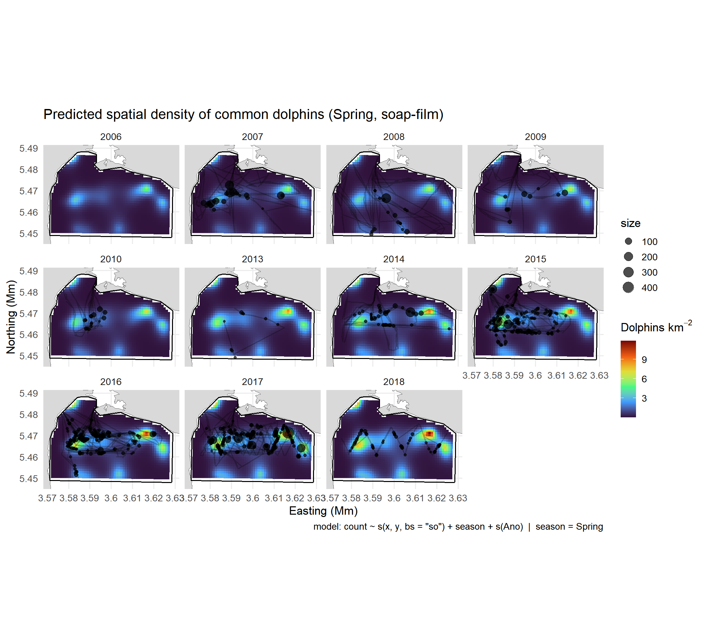
4.2.2 Año
Hay una clara tendencia positiva (lineal) en la densidad de delfines comnues en el área de estudio
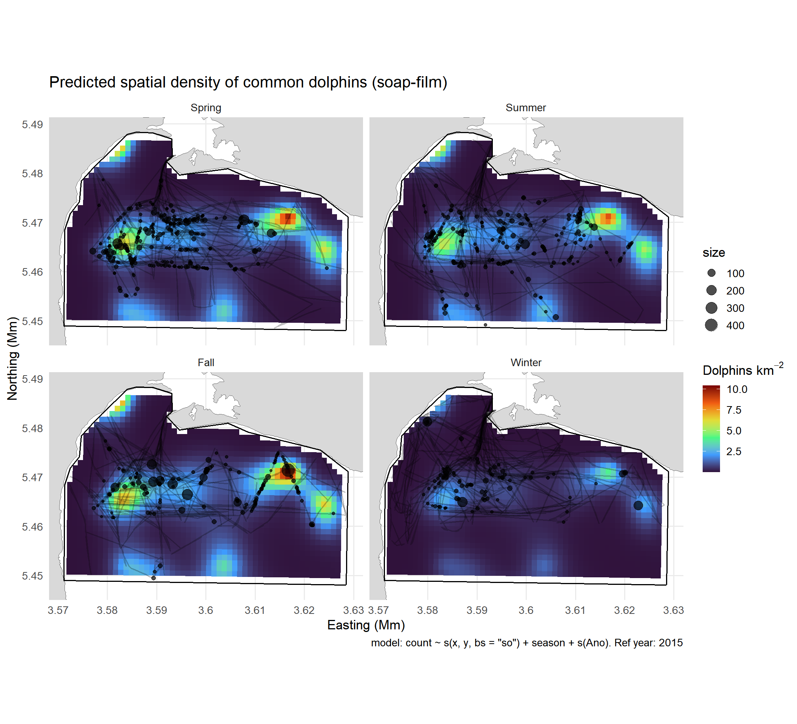
Tabla de ANOVA de este modelo. El termino de posicion tiene pvalue muy pequeno, el de ano 0.038, y el de estacion 0.047
Family: Tweedie(p=1.583)
Link function: log
Formula:
count ~ s(x, y) + season + s(Ano) + offset(off.set)
Parametric Terms:
df F p-value
season 3 6.911 0.000121
Approximate significance of smooth terms:
edf Ref.df F p-value
s(x,y) 24.694 27.819 8.517 < 2e-16
s(Ano) 1.001 1.001 11.304 0.0007754.3 Predicciones de densidad
Estos son mapas de predicciones de densidad en base a 2 modelos:
count ~ s(x,y) + season + s(Ano)
count ~ s(x,y) + season + s(Ano) + s(clo)- el modelo mas parsimonioso
4.3.1 Año variable
Aqui grafico las predicciones a lo largo de los años, usando primavera como estacion de referencia - se pueden producir mapas estacionales + anuales
No veo gran diferencia entre las predicciones de los modelos.
Hay 3 focos de densidad de delfines en el area. La disposición espacial de alta densidad de delfines es similar entre las 2 especies, pero no identica
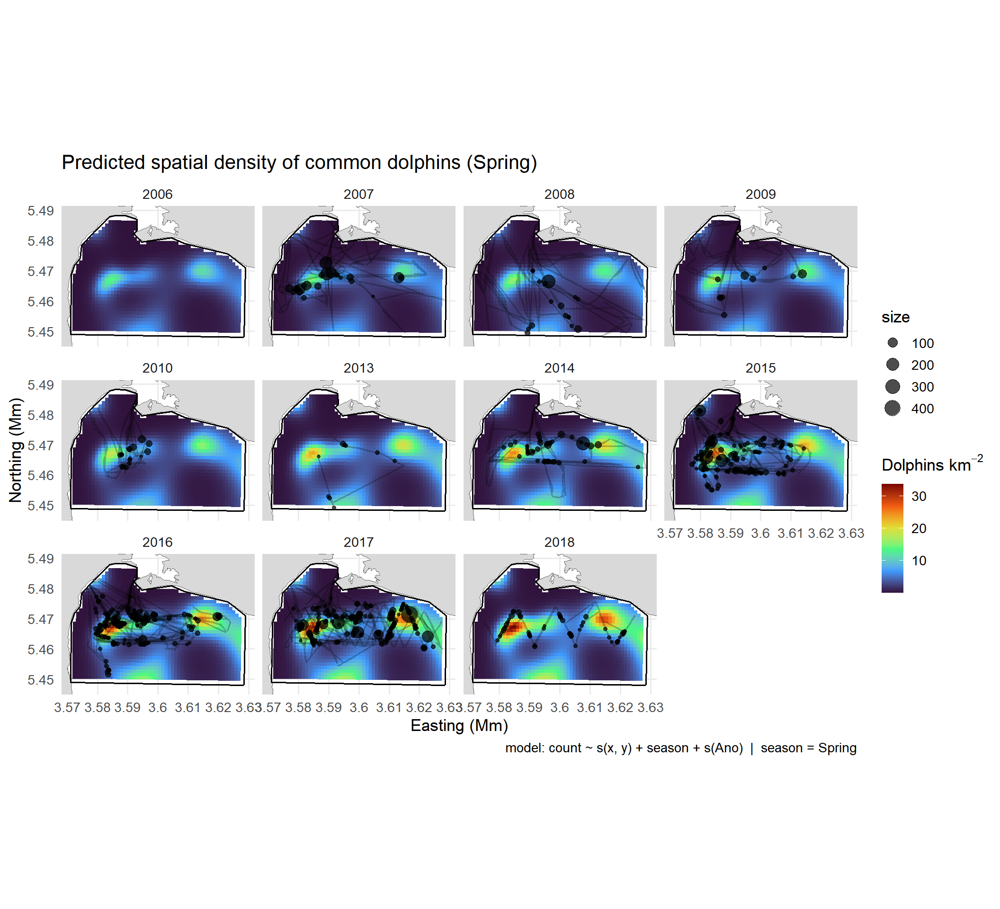
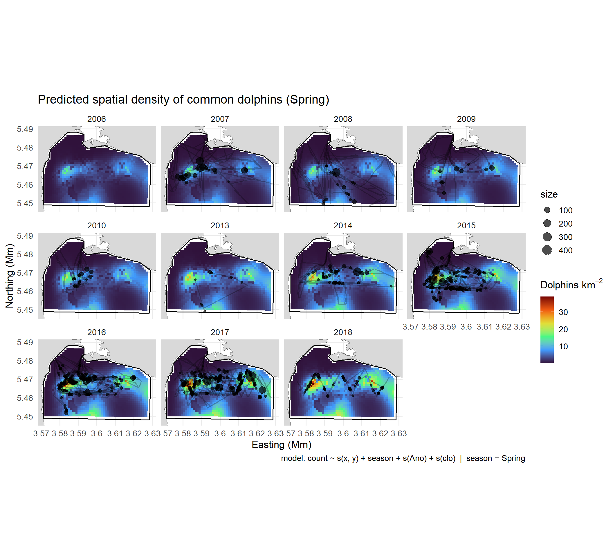
4.3.2 Estación variable
Aqui grafico las predicciones a lo largo de las estaciones, usando 2015 como año de referencia
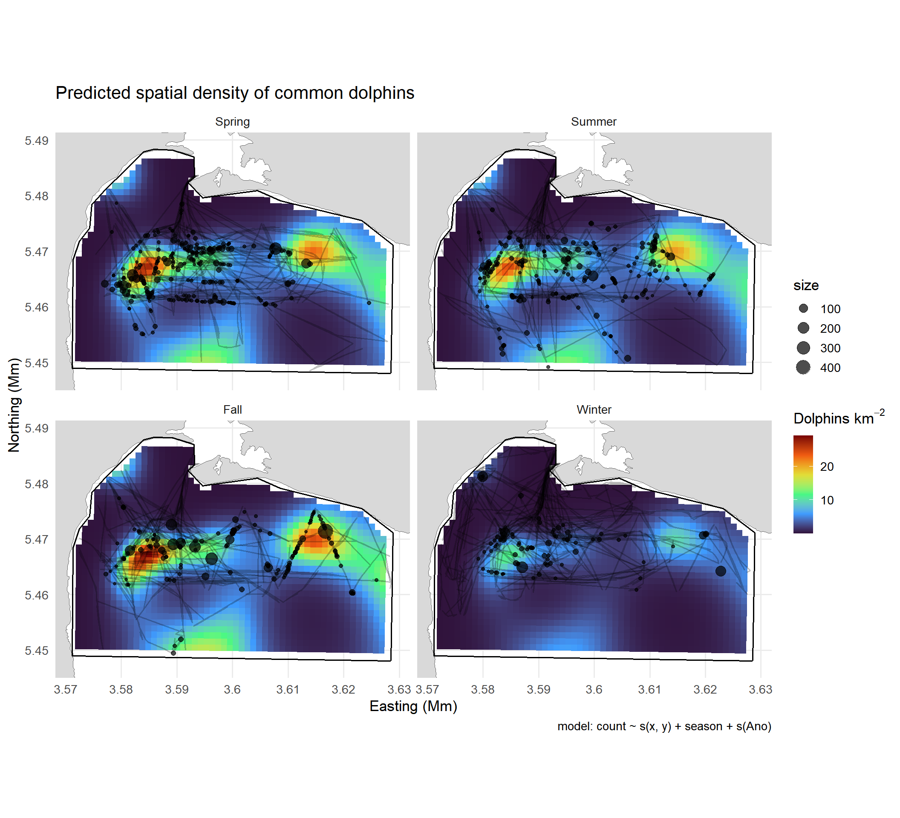
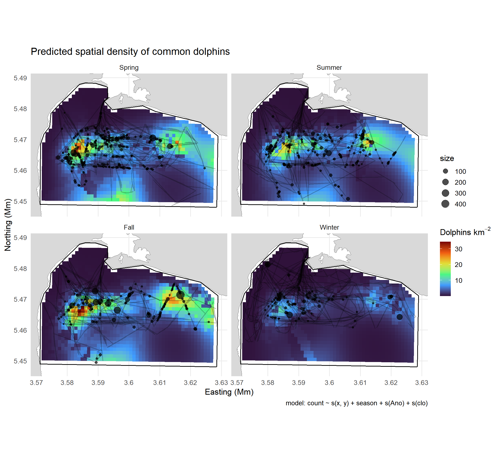
4.3.3 Notas
Los modelos ajustados son aditivos (no hay interaccion entre posicion y año o estación). Por ednde, todos los paneles muestran el mismo patron espacial. Se pueden ajustar modelos DSM con interacciones (e.g. te(x, y, Ano) or s(x, y, by = year_fac)) para que los patrones espaciales tengan variabilidad temporal. No lo hice porque creo que no era parte de los objetivos del paper, pero si fuera algo que te interesa, lo podriamos hacer.
No prepare mapas de la varianza de las estimaciones, pero en caso de querer presentar mapas, es algo que deberiamos hacer. Es sencillo, pero no quiero largarme a hacer mil mapas sin antes discutir que queremos presentar
5 Estimaciones de abundancia
Aqui presento estimaciones de abundancia estimadas usando density surface models (negro) y distance clásico (rojo). Los dos métodos utilizan la misma función de detección.
Nótese que las estimaciones hechas sin el componente espacial son mucho mas variables. Las 2 diferencias entre los modelos son:
- Componente espacial incluido en DSM
- Efecto de año incluido como una funcion smooth
Los ticks menores en el eje x representan las estaciones, en orden: verano, otoño, invierno, primavera.
Se notan claramente los efectos de temporada y año. El efecto de año no parece muy grande, pero es debido a la escala del eje y. Haciendo zoom, se ve claramente que la abundancia promedio de delfines previo a 2012 es <5000, mientras después de 2013 es >8500.
6 Progreso luego de la reunion con Silvana
En julio 2026 me reuni con Silvana, y acordamos que seria bueno:
- evaluar si es necesario incluir Beaufort y tamaño grupal en la funcion de detección, y
- abordar la nota en Section 4.3.3 sobre patrones espaciales estáticos
6.1 Funciones de deteccion
Esta evaluacion esta en Section 3.8.2
Conclusion personal de ADB: considero que no vale la pena el esfuerzo para incluir las covariables
6.2 Patrones espaciales estáticos
La nota Section 4.3.3 la habia incluido inicialmente por que en los mapas Figure 1 y Figure 2 se ven 3 focos de densidad que son estaticos (i.e. el efecto espacial no es variable a lo largo de los años o estaciones), y dos de esos focos esta en la fronteras sur y este del area de estudio - sugiriendo que esto puede ser un edge effect.
Considerando esto, ajuste 4 sets de modelos completos (i.e. equivalente a tabla Table 1). Estos 4 modelos se pueden agrupar en:
- Superficie estática
- thin plate: modelos presentados mas arriba
- soap film: Estos modelos respetan los limites y costas con formas irregulares
- Superficies variables en el tiempo
- Superficies independientes por año (modelos by-year). Unshrunk. Esta es la opción más flexible, no asume estructura espacial compartida entre años. En años con pocos datos, se estiman superficies poco realistas
- Superficies con informacion compartida entre años (modelos fs, factor smooth). Shrunk. La información de todos los años es usada en la estimación de la superficie, pero ésta varía por año. Se permite que la superficie espacial varíe según el año mediante una base de suavizado por factores, la cual trata a
year_faccomo un factor de agrupación análogo a un efecto aleatorio en un modelo mixto: la desviación espacial de cada año se penaliza hacia un patrón común compartido, utilizando un único parámetro de suavizado para todos los años.
A priori, el modelo 1.b Superficie estática soap film parece ser el que se ajusta más a la situación (edge effect).
6.2.1 Model selection
esta es la tabla completa con los 4 tipos de modelos (72 modelos en total)
| basis | model | df | AIC | deltaAIC | Dev | p_hat |
|---|---|---|---|---|---|---|
| thin-plate | count ~ s(x,y,by=year_fac) + year_fac + season + s(clo) | 156.78 | 5909.76 | 0.00 | 0.45 | 1.5483 |
| thin-plate | count ~ s(x,y,by=year_fac) + year_fac + s(clo) | 151.36 | 5920.82 | 11.06 | 0.44 | 1.5484 |
| thin-plate | count ~ s(x,y,by=year_fac) + year_fac + season + s(sst) | 156.22 | 5925.72 | 15.96 | 0.44 | 1.5491 |
| thin-plate | count ~ s(x,y,by=year_fac) + year_fac + season + s(VelVert) | 158.39 | 5928.43 | 18.67 | 0.44 | 1.5509 |
| thin-plate | count ~ s(x,y,by=year_fac) + year_fac + season + s(dist.up) | 155.93 | 5938.48 | 28.72 | 0.43 | 1.5448 |
| thin-plate | count ~ s(x,y,by=year_fac) + year_fac + season | 152.85 | 5940.31 | 30.55 | 0.43 | 1.5532 |
| thin-plate | count ~ s(x,y,by=year_fac) + year_fac + season + s(grad) | 155.92 | 5941.13 | 31.37 | 0.43 | 1.5449 |
| thin-plate | count ~ s(x,y,by=year_fac) + year_fac + season + s(slope) | 157.34 | 5943.87 | 34.11 | 0.43 | 1.5533 |
| thin-plate | count ~ s(x,y,by=year_fac) + year_fac + s(sst) | 154.54 | 5943.87 | 34.11 | 0.43 | 1.5532 |
| thin-plate | count ~ s(x,y,year_fac,bs=fs) + season + s(clo) | 141.65 | 5947.76 | 38.00 | 0.42 | 1.5436 |
| thin-plate | count ~ s(x,y,by=year_fac) + year_fac + s(VelVert) | 153.37 | 5949.74 | 39.98 | 0.43 | 1.5537 |
| thin-plate | count ~ s(x,y,by=year_fac) + year_fac + season + s(depth) | 157.41 | 5950.36 | 40.60 | 0.43 | 1.5503 |
| thin-plate | count ~ s(x,y,by=year_fac) + year_fac + s(dist.up) | 150.42 | 5950.95 | 41.19 | 0.42 | 1.5504 |
| thin-plate | count ~ s(x,y,by=year_fac) + year_fac + s(grad) | 149.77 | 5952.67 | 42.91 | 0.42 | 1.5510 |
| thin-plate | count ~ s(x,y,by=year_fac) + year_fac | 146.94 | 5953.21 | 43.45 | 0.42 | 1.5545 |
| thin-plate | count ~ s(x,y,year_fac,bs=fs) + season + s(sst) | 141.34 | 5953.22 | 43.46 | 0.41 | 1.5436 |
| thin-plate | count ~ s(x,y,by=year_fac) + year_fac + s(depth) | 149.80 | 5958.19 | 48.43 | 0.42 | 1.5558 |
| thin-plate | count ~ s(x,y,year_fac,bs=fs) + s(clo) | 140.15 | 5958.66 | 48.90 | 0.41 | 1.5443 |
| thin-plate | count ~ s(x,y,year_fac,bs=fs) + season + s(VelVert) | 142.06 | 5958.89 | 49.13 | 0.41 | 1.5456 |
| thin-plate | count ~ s(x,y,by=year_fac) + year_fac + s(slope) | 151.93 | 5959.99 | 50.23 | 0.42 | 1.5552 |
| thin-plate | count ~ s(x,y,year_fac,bs=fs) + season + s(dist.up) | 136.25 | 5962.98 | 53.22 | 0.40 | 1.5460 |
| thin-plate | count ~ s(x,y,year_fac,bs=fs) + season + s(depth) | 125.40 | 5964.53 | 54.77 | 0.39 | 1.5484 |
| thin-plate | count ~ s(x,y,year_fac,bs=fs) + season + s(slope) | 135.84 | 5967.69 | 57.93 | 0.40 | 1.5474 |
| thin-plate | count ~ s(x,y,year_fac,bs=fs) + season | 135.89 | 5967.91 | 58.15 | 0.40 | 1.5495 |
| thin-plate | count ~ s(x,y,year_fac,bs=fs) + season + s(grad) | 138.72 | 5969.41 | 59.65 | 0.40 | 1.5492 |
| thin-plate | count ~ s(x,y,year_fac,bs=fs) + s(sst) | 142.07 | 5976.31 | 66.55 | 0.40 | 1.5478 |
| thin-plate | count ~ s(x,y,year_fac,bs=fs) + s(depth) | 122.38 | 5978.01 | 68.25 | 0.38 | 1.5492 |
| thin-plate | count ~ s(x,y,year_fac,bs=fs) + s(dist.up) | 136.30 | 5978.14 | 68.38 | 0.40 | 1.5483 |
| thin-plate | count ~ s(x,y,year_fac,bs=fs) | 133.16 | 5981.08 | 71.32 | 0.39 | 1.5505 |
| thin-plate | count ~ s(x,y,year_fac,bs=fs) + s(grad) | 136.50 | 5981.33 | 71.57 | 0.39 | 1.5501 |
| thin-plate | count ~ s(x,y,year_fac,bs=fs) + s(VelVert) | 140.93 | 5981.41 | 71.65 | 0.40 | 1.5481 |
| thin-plate | count ~ s(x,y,year_fac,bs=fs) + s(slope) | 132.62 | 5982.42 | 72.66 | 0.39 | 1.5486 |
| soap | count ~ s(x,y,so) + season + s(Ano) + s(clo) | 49.08 | 6053.07 | 143.31 | 0.26 | 1.5697 |
| soap | count ~ s(x,y,so) + season + s(clo) | 46.46 | 6054.04 | 144.28 | 0.25 | 1.5695 |
| thin-plate | count ~ s(x,y) + season + s(Ano) + s(clo) | 42.21 | 6068.67 | 158.91 | 0.24 | 1.5769 |
| soap | count ~ s(x,y,so) + s(Ano) + s(clo) | 45.94 | 6068.73 | 158.97 | 0.24 | 1.5694 |
| soap | count ~ s(x,y,so) + season + s(Ano) + s(sst) | 48.69 | 6072.73 | 162.97 | 0.25 | 1.5713 |
| thin-plate | count ~ s(x,y) + season + s(clo) | 39.42 | 6074.04 | 164.28 | 0.23 | 1.5771 |
| soap | count ~ s(x,y,so) + season + s(Ano) + s(grad) | 46.05 | 6076.34 | 166.58 | 0.24 | 1.5790 |
| soap | count ~ s(x,y,so) + season + s(grad) | 45.08 | 6080.40 | 170.64 | 0.24 | 1.5787 |
| soap | count ~ s(x,y,so) + season + s(sst) | 48.98 | 6081.37 | 171.61 | 0.24 | 1.5708 |
| thin-plate | count ~ s(x,y) + s(Ano) + s(clo) | 39.68 | 6082.14 | 172.38 | 0.23 | 1.5761 |
| soap | count ~ s(x,y,so) + season + s(Ano) + s(dist.up) | 43.90 | 6082.18 | 172.42 | 0.23 | 1.5719 |
| thin-plate | count ~ s(x,y) + season + s(Ano) + s(sst) | 40.80 | 6083.27 | 173.51 | 0.23 | 1.5773 |
| thin-plate | count ~ s(x,y) + s(Ano) + s(sst) | 37.44 | 6086.13 | 176.37 | 0.22 | 1.5755 |
| soap | count ~ s(x,y,so) + s(Ano) + s(sst) | 43.54 | 6086.29 | 176.53 | 0.23 | 1.5701 |
| soap | count ~ s(x,y,so) + season + s(Ano) + s(slope) | 48.53 | 6086.77 | 177.01 | 0.24 | 1.5710 |
| soap | count ~ s(x,y,so) + s(Ano) + s(grad) | 45.83 | 6088.26 | 178.50 | 0.23 | 1.5792 |
| soap | count ~ s(x,y,so) + season + s(dist.up) | 42.86 | 6088.52 | 178.76 | 0.23 | 1.5719 |
| thin-plate | count ~ s(x,y) + season + s(sst) | 40.11 | 6092.08 | 182.32 | 0.22 | 1.5775 |
| thin-plate | count ~ s(x,y) + season + s(Ano) + s(dist.up) | 35.78 | 6092.76 | 183.00 | 0.22 | 1.5783 |
| soap | count ~ s(x,y,so) + season + s(slope) | 46.34 | 6093.80 | 184.04 | 0.23 | 1.5708 |
| thin-plate | count ~ s(x,y) + season + s(Ano) + s(slope) | 38.75 | 6096.10 | 186.34 | 0.22 | 1.5772 |
| soap | count ~ s(x,y,so) + season + s(Ano) + s(depth) | 44.44 | 6096.75 | 186.99 | 0.23 | 1.5756 |
| soap | count ~ s(x,y,so) + season + s(Ano) + s(VelVert) | 48.71 | 6097.56 | 187.80 | 0.23 | 1.5739 |
| soap | count ~ s(x,y,so) + season + s(VelVert) | 46.92 | 6099.96 | 190.20 | 0.23 | 1.5735 |
| thin-plate | count ~ s(x,y) + season + s(Ano) + s(VelVert) | 40.13 | 6100.45 | 190.69 | 0.22 | 1.5797 |
| soap | count ~ s(x,y,so) + season + s(Ano) | 40.86 | 6100.53 | 190.77 | 0.22 | 1.5761 |
| thin-plate | count ~ s(x,y) + season + s(Ano) + s(grad) | 36.24 | 6100.68 | 190.92 | 0.21 | 1.5851 |
| thin-plate | count ~ s(x,y) + season + s(dist.up) | 34.70 | 6101.30 | 191.54 | 0.21 | 1.5783 |
| soap | count ~ s(x,y,so) + season + s(depth) | 43.72 | 6103.01 | 193.25 | 0.22 | 1.5752 |
| soap | count ~ s(x,y,so) + s(Ano) + s(slope) | 48.24 | 6103.88 | 194.12 | 0.23 | 1.5710 |
| soap | count ~ s(x,y,so) + s(Ano) + s(dist.up) | 41.21 | 6105.90 | 196.14 | 0.22 | 1.5743 |
| thin-plate | count ~ s(x,y) + season + s(VelVert) | 38.98 | 6106.17 | 196.41 | 0.21 | 1.5793 |
| soap | count ~ s(x,y,so) + season | 39.79 | 6106.29 | 196.53 | 0.21 | 1.5760 |
| thin-plate | count ~ s(x,y) + season + s(grad) | 35.36 | 6106.47 | 196.71 | 0.21 | 1.5851 |
| thin-plate | count ~ s(x,y) + season + s(slope) | 37.08 | 6106.78 | 197.02 | 0.21 | 1.5774 |
| thin-plate | count ~ s(x,y) + season + s(Ano) | 32.37 | 6108.40 | 198.64 | 0.20 | 1.5826 |
| thin-plate | count ~ s(x,y) + s(Ano) + s(slope) | 38.15 | 6110.27 | 200.51 | 0.21 | 1.5772 |
| soap | count ~ s(x,y,so) + s(Ano) + s(depth) | 44.37 | 6111.28 | 201.52 | 0.22 | 1.5758 |
| thin-plate | count ~ s(x,y) + season + s(Ano) + s(depth) | 35.33 | 6112.15 | 202.39 | 0.20 | 1.5822 |
| thin-plate | count ~ s(x,y) + s(Ano) + s(grad) | 35.45 | 6113.28 | 203.52 | 0.20 | 1.5859 |
| thin-plate | count ~ s(x,y) + s(Ano) + s(dist.up) | 32.94 | 6114.07 | 204.31 | 0.20 | 1.5813 |
| thin-plate | count ~ s(x,y) + season | 31.39 | 6117.66 | 207.90 | 0.19 | 1.5827 |
| soap | count ~ s(x,y,so) + s(Ano) | 40.24 | 6118.53 | 208.77 | 0.21 | 1.5761 |
| soap | count ~ s(x,y,so) | 36.77 | 6119.65 | 209.89 | 0.20 | 1.5764 |
| thin-plate | count ~ s(x,y) + season + s(depth) | 34.65 | 6120.74 | 210.98 | 0.20 | 1.5821 |
| soap | count ~ s(x,y,so) + s(Ano) + s(VelVert) | 45.19 | 6122.04 | 212.28 | 0.21 | 1.5760 |
| thin-plate | count ~ s(x,y) + s(Ano) + s(VelVert) | 39.25 | 6122.54 | 212.78 | 0.20 | 1.5812 |
| thin-plate | count ~ s(x,y) + s(Ano) | 31.66 | 6123.40 | 213.64 | 0.19 | 1.5828 |
| thin-plate | count ~ s(x,y) + s(Ano) + s(depth) | 34.86 | 6125.24 | 215.48 | 0.19 | 1.5823 |
| thin-plate | count ~ s(x,y) | 28.29 | 6128.53 | 218.77 | 0.18 | 1.5833 |
Los modelos mas parsimoniosos son los modelos 2 Superficies variables en el tiempo, pero estos modelos produjeron estimaciones de abundancia que no son realistas:
- 2.a Superficies independientes por año (modelos by-year) produjeron abundancias > 10 mil millones de delfines en 2010
- 2.b. Superficies con informacion compartida entre años
- cerca de 40 mil delfines en el otoño de 2015
- varias estimaciones > 15 mil delfines
De los modelos 1. Superficie estática, los modelos 1.b soap film son los mas parsimoniosos
Esta es la tabla de model selection considerando solamente los modelos 1.b soap film . La proporción del deviance explicada es menor que para delfines oscuros (>20%)
| model | df | AIC | deltaAIC | Dev | p_hat |
|---|---|---|---|---|---|
| count ~ s(x,y,so) + season + s(Ano) + s(clo) | 49.08 | 6053.07 | 0.00 | 0.26 | 1.5697 |
| count ~ s(x,y,so) + season + s(clo) | 46.46 | 6054.04 | 0.97 | 0.25 | 1.5695 |
| count ~ s(x,y,so) + s(Ano) + s(clo) | 45.94 | 6068.73 | 15.66 | 0.24 | 1.5694 |
| count ~ s(x,y,so) + season + s(Ano) + s(sst) | 48.69 | 6072.73 | 19.66 | 0.25 | 1.5713 |
| count ~ s(x,y,so) + season + s(Ano) + s(grad) | 46.05 | 6076.34 | 23.27 | 0.24 | 1.5790 |
| count ~ s(x,y,so) + season + s(grad) | 45.08 | 6080.40 | 27.33 | 0.24 | 1.5787 |
| count ~ s(x,y,so) + season + s(sst) | 48.98 | 6081.37 | 28.30 | 0.24 | 1.5708 |
| count ~ s(x,y,so) + season + s(Ano) + s(dist.up) | 43.90 | 6082.18 | 29.11 | 0.23 | 1.5719 |
| count ~ s(x,y,so) + s(Ano) + s(sst) | 43.54 | 6086.29 | 33.22 | 0.23 | 1.5701 |
| count ~ s(x,y,so) + season + s(Ano) + s(slope) | 48.53 | 6086.77 | 33.70 | 0.24 | 1.5710 |
| count ~ s(x,y,so) + s(Ano) + s(grad) | 45.83 | 6088.26 | 35.19 | 0.23 | 1.5792 |
| count ~ s(x,y,so) + season + s(dist.up) | 42.86 | 6088.52 | 35.45 | 0.23 | 1.5719 |
| count ~ s(x,y,so) + season + s(slope) | 46.34 | 6093.80 | 40.73 | 0.23 | 1.5708 |
| count ~ s(x,y,so) + season + s(Ano) + s(depth) | 44.44 | 6096.75 | 43.68 | 0.23 | 1.5756 |
| count ~ s(x,y,so) + season + s(Ano) + s(VelVert) | 48.71 | 6097.56 | 44.49 | 0.23 | 1.5739 |
| count ~ s(x,y,so) + season + s(VelVert) | 46.92 | 6099.96 | 46.89 | 0.23 | 1.5735 |
| count ~ s(x,y,so) + season + s(Ano) | 40.86 | 6100.53 | 47.46 | 0.22 | 1.5761 |
| count ~ s(x,y,so) + season + s(depth) | 43.72 | 6103.01 | 49.94 | 0.22 | 1.5752 |
| count ~ s(x,y,so) + s(Ano) + s(slope) | 48.24 | 6103.88 | 50.81 | 0.23 | 1.5710 |
| count ~ s(x,y,so) + s(Ano) + s(dist.up) | 41.21 | 6105.90 | 52.83 | 0.22 | 1.5743 |
| count ~ s(x,y,so) + season | 39.79 | 6106.29 | 53.22 | 0.21 | 1.5760 |
| count ~ s(x,y,so) + s(Ano) + s(depth) | 44.37 | 6111.28 | 58.21 | 0.22 | 1.5758 |
| count ~ s(x,y,so) + s(Ano) | 40.24 | 6118.53 | 65.46 | 0.21 | 1.5761 |
| count ~ s(x,y,so) | 36.77 | 6119.65 | 66.58 | 0.20 | 1.5764 |
| count ~ s(x,y,so) + s(Ano) + s(VelVert) | 45.19 | 6122.04 | 68.97 | 0.21 | 1.5760 |
Similar al caso Table 1, añadir covariables ambientales implica una mejora marginal en la proporcion de deviance explicada: 26% explicada por el modelo mas parsimonioso (incluye clorofila) contra 22% explicada por el modelo que incluye solo año y estación.
En lo que continua, persentare los resultados del modelo que excluye variables ambientales.
6.2.2 Efectos parciales de estacion, año y efecto espacial
6.2.2.1 Estacion
La densidad de delfines comunes es mas baja en invierno que en el resto de las estaciones. No parece haber diferencias entre el resto de las estaciones. El modelo toma a primavera como baseline, por eso la estimacion del parametro no tiene CI
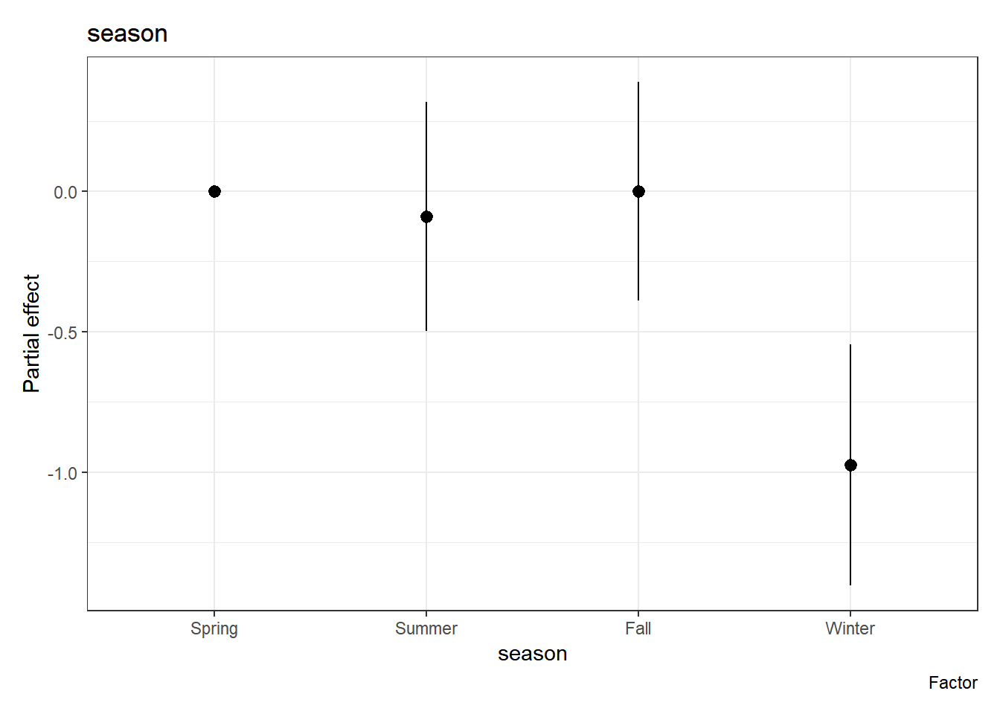
6.2.2.2 Año
Hay una clara tendencia positiva (lineal) en la densidad de delfines comnues en el área de estudio

6.2.3 Predicciones de densidad
6.2.3.1 Año variable
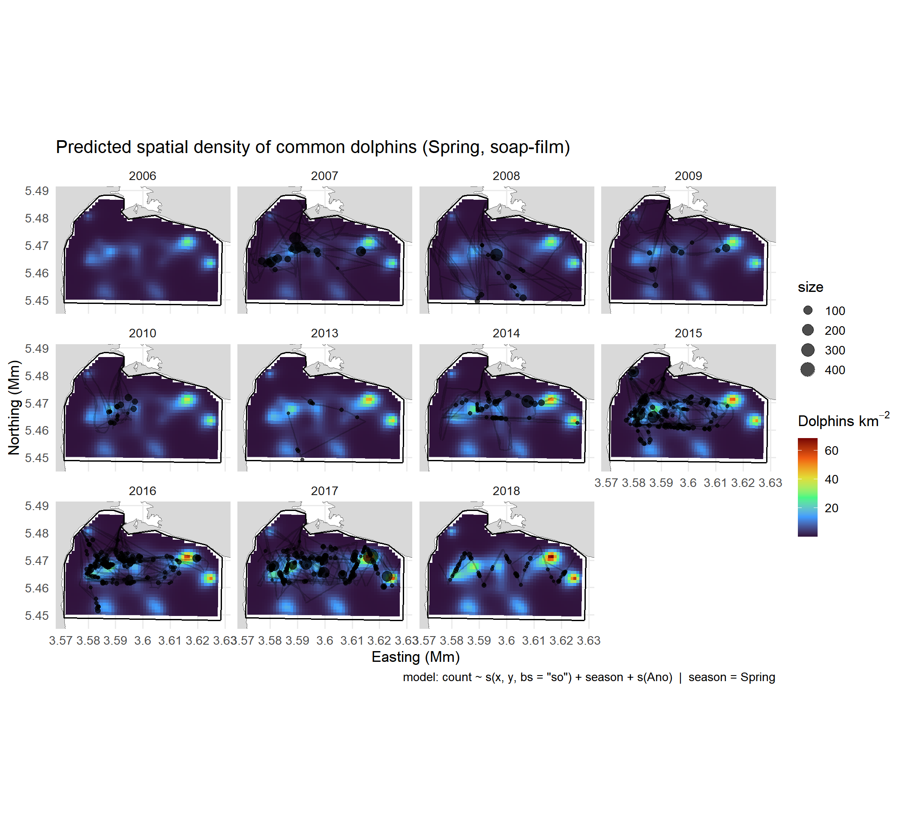
6.2.3.2 Estacion variable
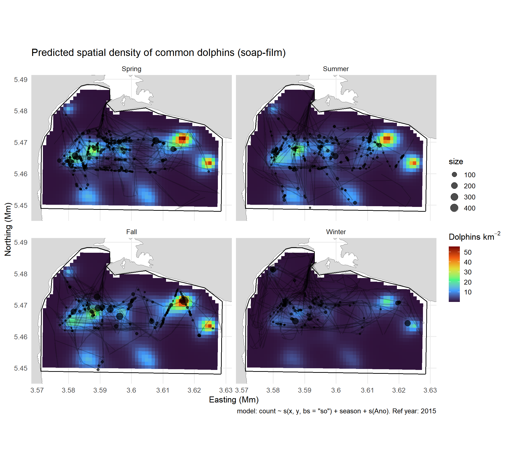
6.2.4 Estimaciones de abundancia
Los ticks menores en el eje x representan las estaciones, en orden: verano, otoño, invierno, primavera.
Se notan claramente los efectos de temporada y año. El efecto de año no parece muy grande, pero es debido a la escala del eje y. Haciendo zoom, se ve claramente que la abundancia promedio de delfines previo a 2012 es <5000, mientras después de 2013 es ~8000.
6.2.5 Mapas de coeficiente de variacion (CV)
Aqui grafico el mapa de las estimaciones de CV=SD/mean, analogo al mapa 5 presentado en Miller et al. (2013)
La mayor variabilidad en las estimaciones de abundancia ocurren en lugares donde no hubo cobertura de surveys
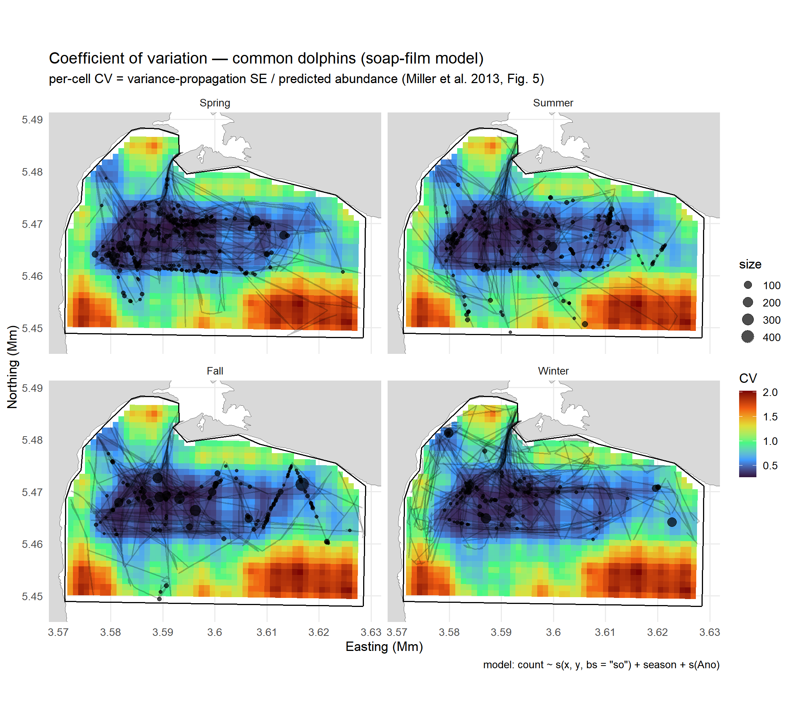
7 Separar efecto del tiempo del numero de observadores
Durante agosto 2026 mantuvimos reuniones con el grupo de trabajo: Silvana Dans, Guillermo Svendsen, Alejandro Buren, Mariano Coscarella y Agustin Luzzenti. Silvana y ADB presentaron los resultados obtenidos hasta ese momento.
De esa reunión surgieron 2 temas que el equipo de trabajo considero importante abordar:
- Velocidad Vertical : inlcusión de Velocidad Vertical de agua como covariable en los modelos DSM. Esta variable indica upwellings (velocidades positivas)/downwellings (velocidades negativas). Guille calculo promedios climatologicos (medias mensuales). La inclusión de esta variable fue hecha del mismo modo que la inclusión del resto de las variables ambientales a los DSMs. Su inclusión no mejoró la capacidad de explicación de los modelos.
- Número de observadores : dado que los surveys que informan este analisis se hicieron con una multiplicidad de objetivos (es decir, no fueron diseñados especificamente como surveys para estimar abundancia), el numero de observadores, y el comportamiento de los observadores, vario con el tiempo. Los surveys mas tempranos se hicieron con solo un observador (Guille), y luego se sumaron mas observadores. Dada esta tendencia: bajo numero de observadores al principio, aumento de observadores luego, es posible que el efecto del tiempo estimada por los DSM (positiva) sea en parte resultado del aumento de observadores (mayor numero de observadores = mayor esfuerzo –> aumento de densidad). Para abordar este problema, Guille y Silvana revisaron las planillas en papel de cada survey y establecieron la variable “Numero efectivo de observadores”. Es decir, en algunas salidas hubo hsata 6 personas a bordo de la embarcacion, pero no todos fueron parte del esfuerzo de observacion de delfines.
Aqui se grafica el numero efectivo de observadores (n_obs) a lo largo del tiempo (cada punto representa una salida)
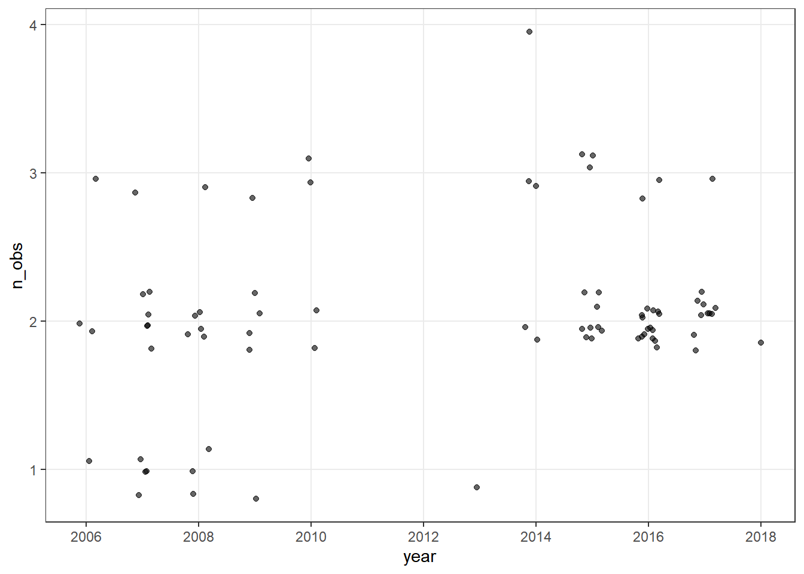
7.1 Estrategias
Consideramos 3 estrategias independientes:
- Incorporar la variable
n_obsa la funcion de detección
- Incorporar la variable
n_obsa los modelos DSM
- Analisis de sensibilidad. Ajustar el mejor modelo (DSM soap model, con año y estación como covariables), usando sólo las salidas donde
n_obs=2, y comparar la tendencia del efecto parcial de la variable año entre este modelo y la del modelo ajustado usando todos los datos.
7.1.1 Incorporar la variable n_obs a la funcion de detección
Este ejercicio es presentado en Section 3.
La funcion de deteccion cambia sensiblemente con la incorporación de n_obs. Notese que la funcion de deteccion es diferente para las salidas con 1 observador y con 2 o más observadores.
Sin embargo, esta estrategia no fue adoptada dado que n_obs == 1 ocurre solo en el periodo 2006-2010, y n_obs es casi siempre 2 a partir de 2015. Es decir que el numero efectivo de observadores no esta simplemente correlacionado con año, es casi una “step function” de año. Esto quiere decir que en caso de incluir n_obs en la funcion de deteccion, su coeficiente en realidad va a codificar “periodo”, que es la misma informacion que codifica la variable año en el DSM.
Como conclusion, incluir n_obs en la funcion de deteccion no nos permitiria separar el efecto de año del efecto del numero de observadores
7.1.2 Incorporar la variable n_obs a los modelos DSM
Este ejercicio consideraba incluir n_obs al DSM,
count ~ s(x,y,bs="so") + season + s(Ano)) + n_obs + ...
en lugar de incorporarla a la funcion de deteccion.
Esta estrategia no fue implementada por dos razones:
n_obses una covariable de detectabilidad (es decir afecta si un animal fue detectado), no una covariable de densidad (el numero de observadores no afecta la cantidad de animales presentes en el area)
n_obses una “step function” de año. Por ende, incluirs(Ano)yn_obsen el mismo DSM no va a permitir separar la variabilidad explicada por cada una de las variables.
7.1.3 Analisis de sensibilidad
En esta estrategia, mantuvimos n_obs constante. Por ende, removemos el efecto de n_obs de los resultados, en lugar de intentar modelarlo. De esta manera, si encontramos que el efecto de s(Ano) todavia muestra una tendencia positiva, esto es evidencia de que la tendencia es real y no un artefacto del numero variable de n_obs. Por el contrario, si el efecto de s(Ano) es distinto al efecto encontrado usando todos los datos, esto indicaria que la tendencia es, al menos parcialmente, un artefacto del numero variable de n_obs.
Procedimiento:
Usando la funcion de deteccion sin covariables, ajustamos nuevamente el modelo count ~ s(x,y,bs="so") + season + s(Ano)), utilizando solo las detecciones donde n_obs==2.
Elegimos n_obs==2 porque es el numero de observadores efectivos mas consistente a lo largo del tiempo
Esta tabla presenta el numero de detecciones totales, y las detecciones usando n_obs==2
| Ano | n_total | n_obs2 | pct_obs2 |
|---|---|---|---|
| 2006 | 154 | 49 | 31.8 |
| 2007 | 660 | 387 | 58.6 |
| 2008 | 644 | 260 | 40.4 |
| 2009 | 356 | 265 | 74.4 |
| 2010 | 279 | 129 | 46.2 |
| 2013 | 39 | 0 | 0.0 |
| 2014 | 489 | 235 | 48.1 |
| 2015 | 1059 | 764 | 72.1 |
| 2016 | 1276 | 1088 | 85.3 |
| 2017 | 1188 | 1075 | 90.5 |
| 2018 | 144 | 144 | 100.0 |
Este grafico muestra el efecto parcial de s(Ano) en el modelo DSM usando todas las detecciones (rojo), y solo las detecciones donde n_obs==2 (celeste).
El efecto parcial en la curva celeste es mucho mas “wiggly” que el de la curva roja, pero en general muestra una tendencia positiva - en el primer periodo tiende a estar por debajo de cero, y en el segundo periodo tiende a estar por encima de cero
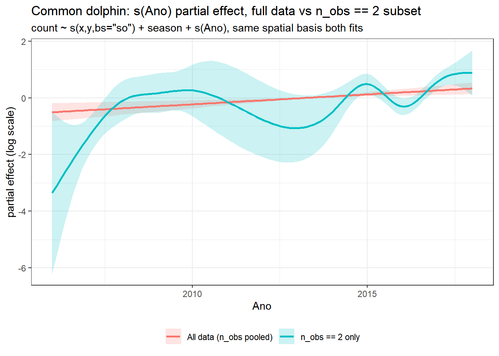
Este grafico muestra el efecto parcial de s(Ano) en el modelo DSM usando solo las detecciones donde n_obs==2 (celeste en el grafico anterior), mostrando los residuales.
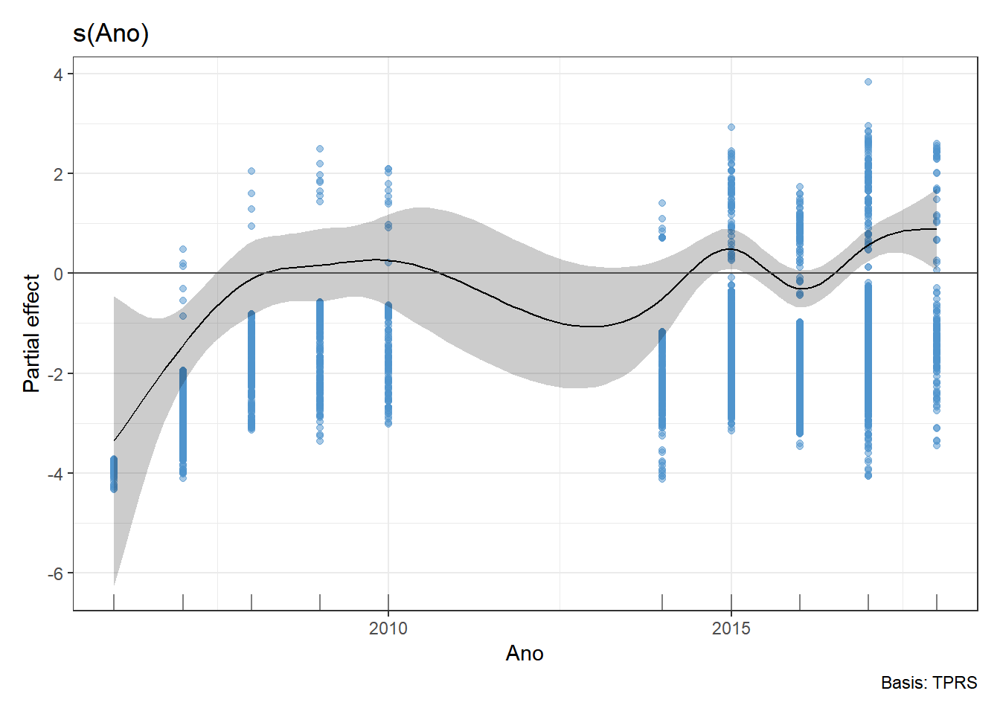
Este grafico muestra el efecto parcial de season en el modelo DSM usando solo las detecciones donde n_obs==2 (celeste en el grafico anterior). Este efecto es consistente con lo que encontramos antes
Estos son los mapas estimados usando el modelo DSM usando solo las detecciones donde n_obs==2
Estos mapas son consistentes con los mapas obtenidos usando todos los datos - esperable dada la proporcion de detecciones donde n_obs==2 (ver tabla)
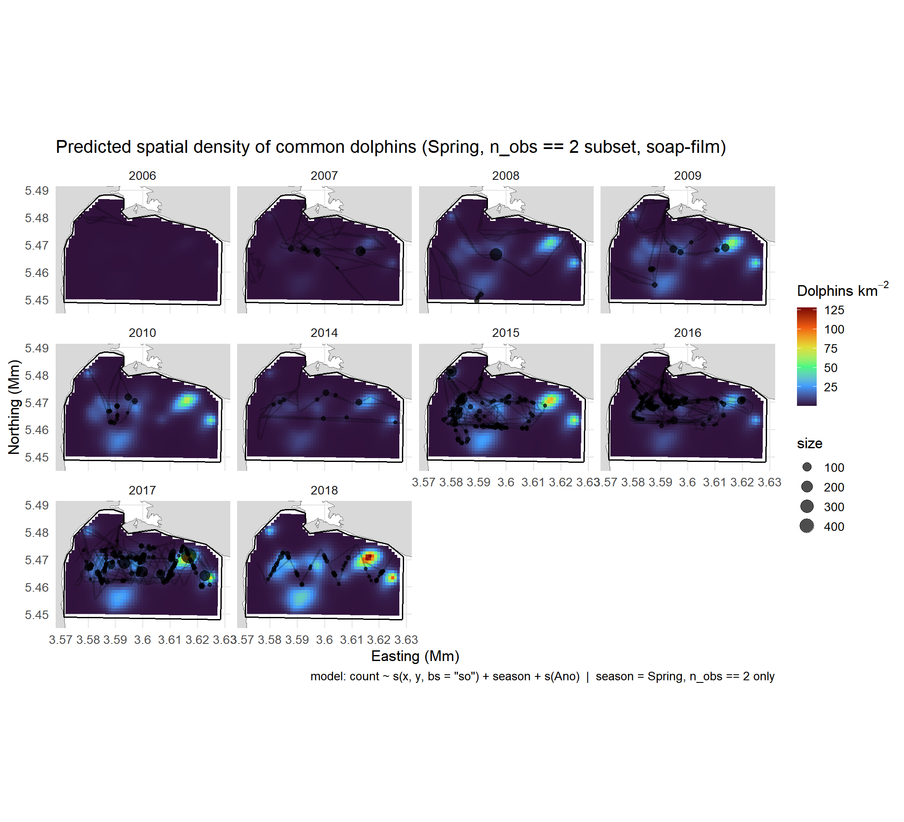
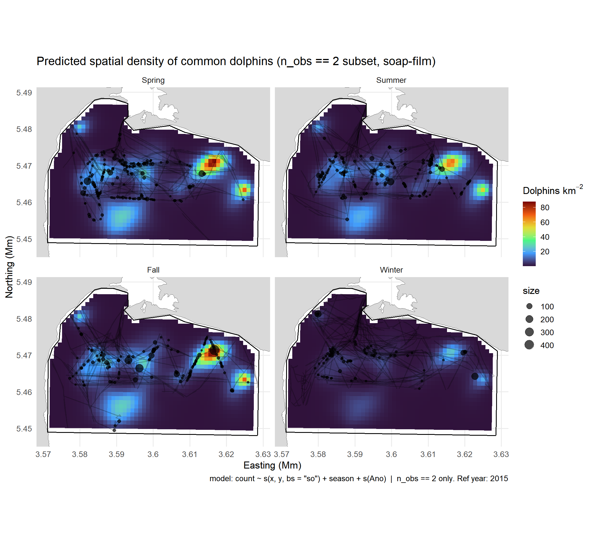
7.2 Conclusion de Separar efecto del tiempo del numero de observadores
La tendencia positiva estimada en la abundancia de delfines comunes en el area de estudio parece ser real, y no un artefacto del numero variable de observadores.
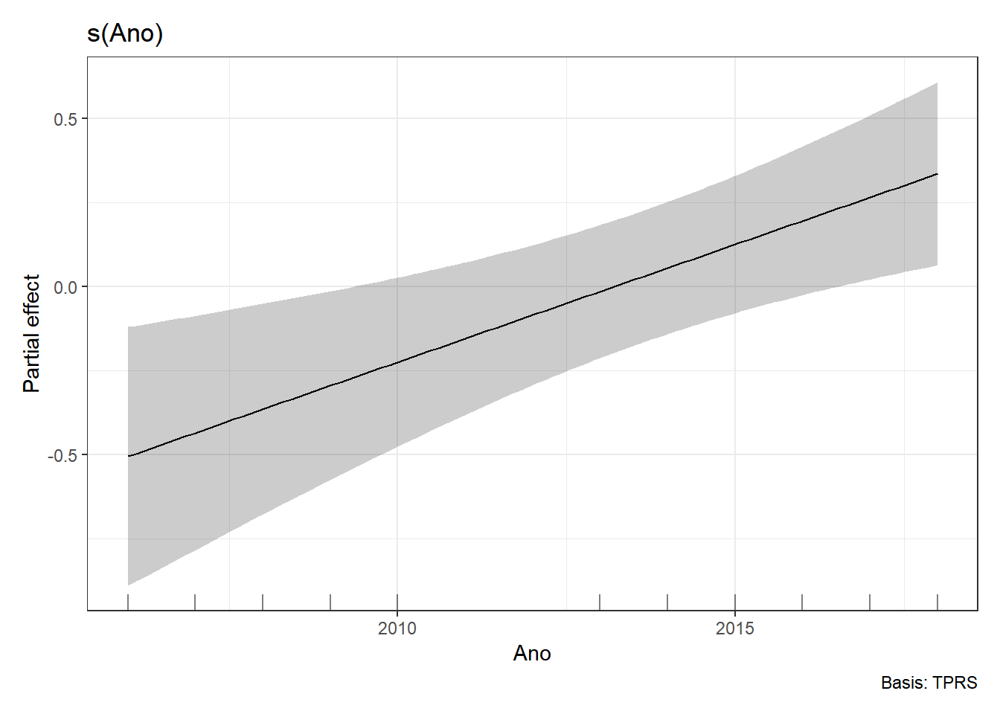
8 Referencias
Buckland ST, Anderson DR, Burnham KP, Laake JL, Borchers DL, Thomas L (2001) Introduction to distance sampling: Estimating abundance of biological populations. Oxford University Press, Oxford.
Buckland ST, Rexstad EA, Marques TA, Oedekoven CS (2015) Distance sampling: Methods and applications. Springer, Cham.
Miller DL, Burt ML, Rexstad EA, Thomas L (2013) Spatial Models for Distance Sampling Data: Recent Developments and Future Directions. Methods in Ecology and Evolution 4:1001–1010.